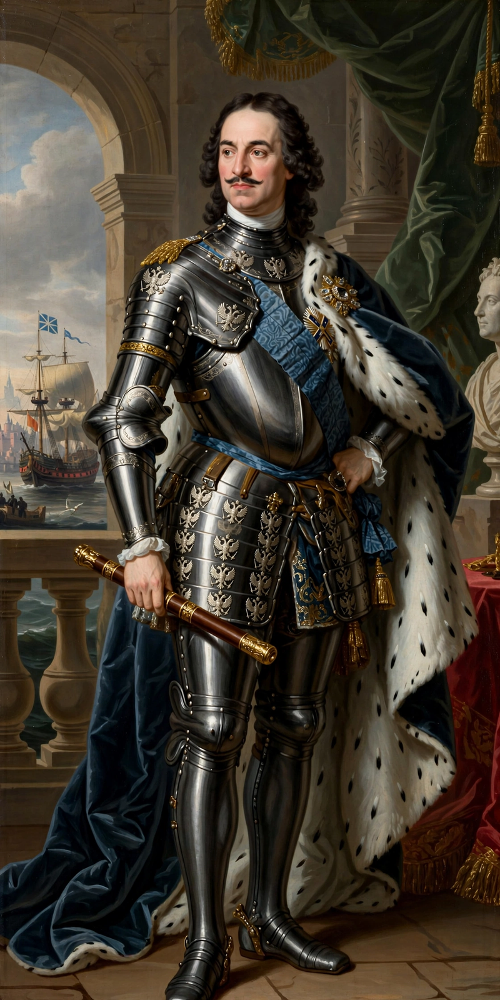

Peter I (9 June 1672 – 8 February 1725), commonly known as Peter the Great, was Tsar of all Russia from 1682 and the first Emperor of Russia from 1721 until his death. Through a series of successful wars and sweeping reforms he transformed Russia from a largely landlocked tsardom into a major European empire. In 1703, on captured Swedish territory at the mouth of the Neva, he founded Saint Petersburg — his "window on Europe" — which became the imperial capital.
| Peter the Great | |
|---|---|
| Reign | 7 May 1682 – 8 February 1725 (co-tsar with Ivan V until 1696) |
| Born | 9 June 1672, Moscow |
| Died | 8 February 1725, Saint Petersburg |
| Spouses | Eudoxia Lopukhina; Catherine I (Marta Skowrońska) |
| House | Romanov |
| Known for | Founding Saint Petersburg and the Imperial Russian Navy; victory in the Great Northern War; westernising reforms |
Peter, son of Tsar Alexis, became co-tsar at ten with his half-brother Ivan V, under the regency of his half-sister Sophia. From the German Quarter of Moscow he absorbed a fascination with ships, artillery and Western technology. After overthrowing Sophia (1689) and Ivan's death (1696), he ruled alone. In 1697–98 he travelled incognito with the "Grand Embassy" through Europe, working as a ship's carpenter in Dutch and English yards — an almost unprecedented education for a monarch.
Peter seized Azov from the Ottomans in 1696, then turned on Sweden in the Great Northern War (1700–1721). Crushed at Narva in 1700, he rebuilt his army on Western lines and crushed Charles XII at Poltava (1709). By the Treaty of Nystad (1721) Russia gained Livonia, Estonia, Ingria and part of Karelia — Baltic dominion — and Peter took the title of Emperor. His last campaigns reached toward the Caspian.
Peter subordinated everything to the state: he replaced the boyar duma with a governing Senate, created colleges of administration, imposed the Table of Ranks (1722) making service — noble or common — the route to status, reformed taxation (the "soul tax"), founded schools, a newspaper, the Academy of Sciences, and the navy from nothing. He shaved boyars' beards, mandated Western dress, adopted the Julian calendar and a simplified civil alphabet. His new capital, built by conscript labour on marshy ground at enormous human cost, embodied the forced modernisation of Russia.

[ IMAGE: Portrait of Peter the Great in armour, after the well-known likenesses — a tall, moustached figure with the blue sash of the Order of St Andrew. ]Peter I, founder of the Russian EmpirePeter died in February 1725, possibly from bladder and urinary complications aggravated after he had waded into icy water to rescue drowning soldiers the previous autumn. He left no clear succession law successfully applied, and was followed by his wife Catherine I. Admired and resented in equal measure, Peter remains the defining figure of Russia's turn toward Europe — Pushkin's Bronze Horseman, the famous equestrian statue in Saint Petersburg, fixes his image in Russian culture.
Saint Petersburg · Catherine the Great · Russian Empire · Moscow
Categories: Peter the Great · Emperors of Russia · House of Romanov